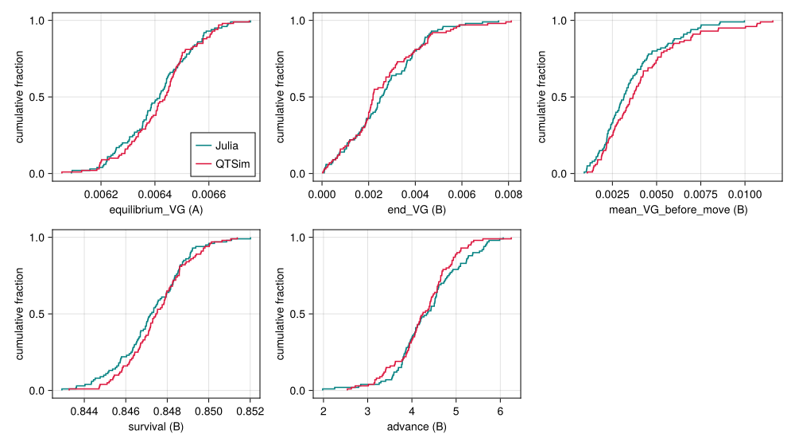
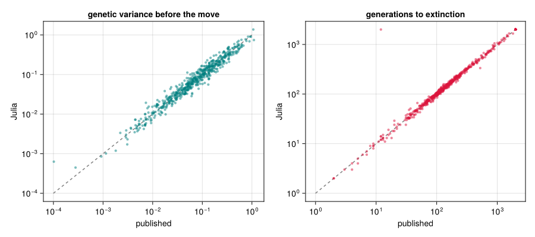

Validation against QTSim
Simon Frost
Overview
The package is meant to be the paper’s model, not an approximation of it. This vignette collects the evidence at three strengths:
- Statistical: the Julia model and QTSim, run many times with their own random numbers, produce the same distributions of the quantities the paper studies.
- Exact: a replica that draws its random numbers from the same library routines as QTSim, in the same order, reproduces QTSim’s output generation by generation.
- Published: on the paper’s own inputs, the Julia model reproduces the paper’s published per-run results.
The first two need the QTSim program, and the replica needs the GSL library QTSim is built on. QTSim’s source comes with the package, in reference/QTSim, and make -C reference/QTSim builds it; the vignette also finds the binary in the paper’s code, unpacked in a Repository/ folder next to the package’s folder, and skips these sections if there is neither. The third uses results stored with the package.
Setup
using QTLSim
using CairoMakie, DelimitedFiles, HypothesisTests, Printf, Random, Statistics
CairoMakie.activate!(type = "png")
const PKG = normpath(joinpath(@__DIR__, "..", ".."))
include(joinpath(PKG, "validate", "qtsim.jl")) # find_qtsim(): see reference/QTSim/README.md
const QTSIM_BIN = something(find_qtsim(), "")
have_qtsim = isfile(QTSIM_BIN);Statistical parity
Two scenarios with one locus, the protocol of the input-generator script shipped with QTSim. In scenario A the population sits at a sharp mutation–selection balance; in scenario B its optimum starts moving at generation 5000 (MoveType = :phenotype) and the fitness function narrows. Each is run 100 times by each program, and the distributions of five summary statistics are compared with two-sample Kolmogorov–Smirnov tests.
QTSim is driven through an options file written by write_qtsim_options, and its output is parsed into the same shape as simulate’s.
function run_qtsim(q::Params, seed)
opts = tempname() * ".txt"; write_qtsim_options(opts, q; seed)
text = try read(`$QTSIM_BIN $opts`, String) finally rm(opts; force = true) end
gen = Int[]; zbar = Float64[]; vg = Float64[]; ns = Int[]; inbody = false
for line in split(text, '\n')
startswith(line, "Pop all died") &&
return (; gen, pheno_mean = zbar, geno_var = vg, nsurv = ns, extinct = true)
startswith(line, "Generation\t") && (inbody = true; continue) # the column header
(inbody && !isempty(strip(line))) || continue
f = split(line, '\t')
push!(gen, parse(Int, f[1])); push!(zbar, parse(Float64, f[2]))
push!(vg, parse(Float64, f[4])); push!(ns, parse(Int, f[5]))
end
(; gen, pheno_mean = zbar, geno_var = vg, nsurv = ns, extinct = false)
end
A = Params(Sample = 10, PopSize = 1000, Ploidy = 2, NoQTL = 1, NoGenerations = 4000,
PhenotypeVar = 0.02, Heritability = 0.5, MutationScalar = 0.02,
MutationRatePerGamete = 0.5, InitFitnessSD = 0.3)
B = Params(Sample = 1, PopSize = 1000, Ploidy = 2, NoQTL = 1, NoGenerations = 6500,
PhenotypeVar = 0.02, Heritability = 0.5, MutationScalar = 0.001,
ChangeFitnessGen = 5000, ChangeFitnessSD = 0.30,
MoveFitnessSDGen = 5000, MoveFitnessSD = 1.0, MoveType = :phenotype)
R = 100
nothingThe summary statistics are applied to both programs’ output alike. Under the phenotype move the lag $\theta - \bar z$ is fixed by construction, so instead of the lag we compare how far the mean phenotype advances.
window(r, lo, hi) = findall(g -> lo <= g <= hi, r.gen)
metrics_A(r) = (; equilibrium_VG = mean(r.geno_var[window(r, 3000, 3999)]))
metrics_B(r) = (; end_VG = mean(r.geno_var[window(r, 6400, 6499)]),
mean_VG_before_move = mean(r.geno_var[window(r, 1000, 4999)]),
survival = mean(r.nsurv[window(r, 5000, 6499)]) / B.PopSize,
advance = mean(r.pheno_mean[window(r, 6400, 6499)]) -
mean(r.pheno_mean[window(r, 5000, 5010)]))
stats = [(:A, :equilibrium_VG), (:B, :end_VG), (:B, :mean_VG_before_move),
(:B, :survival), (:B, :advance)]
out = Any[]
if have_qtsim
jobs = [(prog, scen, s) for prog in (:julia, :qtsim) for scen in (:A, :B) for s in 1:R]
out = Vector{Any}(undef, length(jobs))
Threads.@threads for k in eachindex(jobs)
prog, scen, s = jobs[k]
q = scen === :A ? A : B
r = prog === :julia ? simulate(q; seed = 10_000 + s) : run_qtsim(q, 20_000 + s)
out[k] = (; prog, scen, extinct = r.extinct,
m = r.extinct ? nothing : (scen === :A ? metrics_A(r) : metrics_B(r)))
end
end
pick(prog, scen, f) = [getfield(o.m, f) for o in out
if o.prog === prog && o.scen === scen && !o.extinct]
nothingif have_qtsim
println("| scenario | statistic | Julia mean | QTSim mean | KS D | KS p |")
println("|:--|:--|--:|--:|--:|--:|")
for (scen, f) in stats
j, c = pick(:julia, scen, f), pick(:qtsim, scen, f)
t = ApproximateTwoSampleKSTest(j, c)
@printf("| %s | %s | %.4g | %.4g | %.3f | %.2f |\n", scen, f, mean(j), mean(c), t.δ, pvalue(t))
end
@printf("\nExtinctions in scenario B: Julia %d of %d, QTSim %d of %d.\n",
count(o -> o.prog === :julia && o.scen === :B && o.extinct, out), R,
count(o -> o.prog === :qtsim && o.scen === :B && o.extinct, out), R)
else
println("QTSim was not found (see `reference/QTSim/README.md`), so this section was skipped.")
end| scenario | statistic | Julia mean | QTSim mean | KS D | KS p |
|---|---|---|---|---|---|
| A | equilibrium_VG | 0.006411 | 0.006423 | 0.110 | 0.58 |
| B | end_VG | 0.002667 | 0.002599 | 0.150 | 0.21 |
| B | meanVGbefore_move | 0.003579 | 0.004113 | 0.140 | 0.28 |
| B | survival | 0.8472 | 0.8475 | 0.110 | 0.58 |
| B | advance | 4.365 | 4.251 | 0.110 | 0.58 |
Extinctions in scenario B: Julia 0 of 100, QTSim 0 of 100.
if have_qtsim
fig = Figure(size = (1000, 560))
for (k, (scen, f)) in enumerate(stats)
ax = Axis(fig[fldmod1(k, 3)...], xlabel = "$f ($scen)", ylabel = "cumulative fraction")
ecdfplot!(ax, pick(:julia, scen, f), color = :teal, label = "Julia")
ecdfplot!(ax, pick(:qtsim, scen, f), color = :crimson, label = "QTSim")
k == 1 && axislegend(ax, position = :rb)
end
fig
end
Figure 1: Empirical distribution functions of the summary statistics, Julia (teal) against QTSim (crimson), 100 runs each.
The distributions coincide. The genetic-variance statistics of scenario B, a single locus under weak selection, are heavy-tailed and noisy even with 100 runs; scenario A’s equilibrium variance is the sharp test of the same quantity.
Exact parity
Statistical agreement leaves room for small systematic differences hidden by noise. To rule them out, validate/gsl_locked.jl contains a replica of the model that draws every random number from the GNU Scientific Library routines QTSim uses, in QTSim’s order, and sums genotypes in QTSim’s order. Given QTSim’s seed it should reproduce QTSim’s printed output exactly: the mean phenotype and genetic variance to all six printed decimals and the number of survivors, every generation. compare runs both and reports any generation that differs. The checks cover the single-locus protocol and one of the paper’s own 100-locus input files, which runs until the population dies (without the paper’s data, a 100-locus input of the same design); a negative control applies every crossover point, which QTSim does not, and must diverge.
include(joinpath(PKG, "validate", "gsl_locked.jl")) # defines the replica; runs nothingif have_qtsim && isfile(LIBGSL)
compare(B, 12345, "single-locus protocol, seed 12345")
file = joinpath(SIMDIR, "QT0100-Possion3.0", "Input-00001.txt")
label, q, seed = isfile(file) ? ("QT0100-Possion3.0/Input-00001.txt", read_qtsim_opts(file)...) :
first(multilocus_cases(published = false)) # without the paper's data
compare(Params(q; NoGenerations = 10_600), seed, label)
compare(Params(q; NoGenerations = 2_000), seed, "same input, every crossover point";
allpoints = true)
else
println("QTSim or the GSL library was not found, so this section was skipped.")
end;single-locus protocol, seed 12345 gens compared=6500 mismatches=0 survived (replica extinct=false)
⇒ BIT-IDENTICAL (6 dp + survivor counts, every generation)
QT0100-Possion3.0/Input-00001.txt gens compared=10168 mismatches=0 extinct at gen 10168 (replica 10168)
⇒ BIT-IDENTICAL (6 dp + survivor counts, every generation)
same input, every crossover point gens compared=2000 mismatches=1998 survived (replica extinct=false)
⇒ DIVERGES at gen 2The replica is bit-identical to QTSim, and the negative control diverges at once. The replica’s random numbers come from the same routines as QTSim’s, while the package’s kernel uses Julia’s own generators, so the kernel can only be compared statistically; the replica shows that the algorithm is QTSim’s.
The paper’s published results
The strongest check uses the paper’s own inputs. validate/published_sweep.jl drew 589 of the paper’s 119,984 input files, about 75 from each of the eight strata of locus count and recombination rate, and ran each with the Julia model under both crossover models (only QTSim’s at 5000 loci, where runs are slowest), stopping 2000 generations after the optimum starts to move. (It also confirms that QTSim reproduces the published table exactly on the inputs it reruns.) Its results are stored with the package, next to the published values for the same inputs.
data, header = readdlm(joinpath(PKG, "validate", "published_sweep_results.csv"), ',', header = true)
num(x) = x isa Real ? Float64(x) : something(tryparse(Float64, String(x)), NaN) # empty cells → NaN
col(name) = num.(data[:, findfirst(==(name), vec(header))])
cens(T) = min.(T, 2000.0) # survival after the move, capped
pub_VG, pub_T = col("pub_gv10000"), cens(col("pub_T"))
println("| crossover model | quantity | Julia / published | 95% interval |")
println("|:--|:--|--:|--:|")
for (model, label) in (("qtsim", "QTSim (`:qtsim`)"), ("all", "every point (`:all`)"))
for (name, jl, pub) in (("genetic variance before the move", col("jl_$(model)_gv10000"), pub_VG),
("generations to extinction, capped at 2000", cens(col("jl_$(model)_Tcens")), pub_T))
ok = isfinite.(jl) .& isfinite.(pub) .& (jl .> 0) .& (pub .> 0)
d = log.(jl[ok]) .- log.(pub[ok])
m, se = mean(d), std(d) / sqrt(length(d))
@printf("| %s | %s | %.3f | %.3f–%.3f (%d inputs) |\n", label, name, exp(m), exp(m - 1.96se), exp(m + 1.96se), length(d))
end
end| crossover model | quantity | Julia / published | 95% interval |
|---|---|---|---|
QTSim (:qtsim) | genetic variance before the move | 1.007 | 0.986–1.029 (589 inputs) |
QTSim (:qtsim) | generations to extinction, capped at 2000 | 1.008 | 0.990–1.026 (589 inputs) |
every point (:all) | genetic variance before the move | 1.056 | 1.035–1.077 (565 inputs) |
every point (:all) | generations to extinction, capped at 2000 | 1.123 | 1.094–1.152 (565 inputs) |
fig = Figure(size = (900, 400))
ax1 = Axis(fig[1, 1], xscale = log10, yscale = log10, xlabel = "published", ylabel = "Julia",
title = "genetic variance before the move")
jv = col("jl_qtsim_gv10000"); ok = isfinite.(jv) .& isfinite.(pub_VG) .& (jv .> 0) .& (pub_VG .> 0)
lines!(ax1, [1e-4, 1], [1e-4, 1], color = :gray, linestyle = :dash)
scatter!(ax1, pub_VG[ok], jv[ok], color = (:teal, 0.5), markersize = 6)
ax2 = Axis(fig[1, 2], xscale = log10, yscale = log10, xlabel = "published", ylabel = "Julia",
title = "generations to extinction")
jT = cens(col("jl_qtsim_Tcens"))
lines!(ax2, [1, 2000], [1, 2000], color = :gray, linestyle = :dash)
scatter!(ax2, pub_T, jT, color = (:crimson, 0.5), markersize = 6)
fig
Figure 2: The Julia model (QTSim’s crossover model) against the paper’s published results for the same 589 inputs. Left: genetic variance just before the optimum starts moving. Right: generations to extinction after the move, capped at 2000. The lines are equality.
Individual runs scatter around the line, as they must: the Julia model and QTSim use different random numbers, so the same input gives a different realisation. On average the Julia model with QTSim’s crossover model reproduces the published values to within about one per cent. Applying every crossover point instead gives populations that hold about 6% more genetic variance and survive about 12% longer than the published ones, so the published results depend on QTSim’s single-crossover recombination (Loci and recombination).